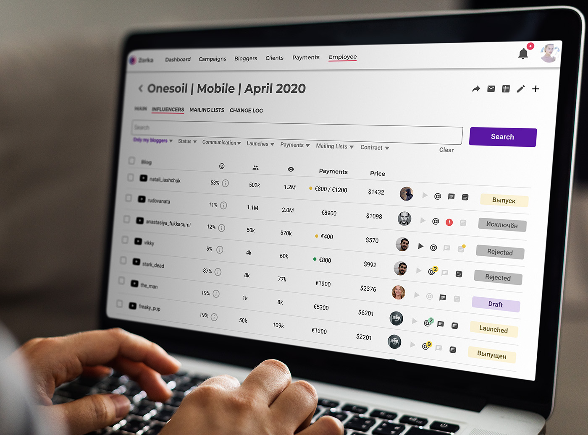
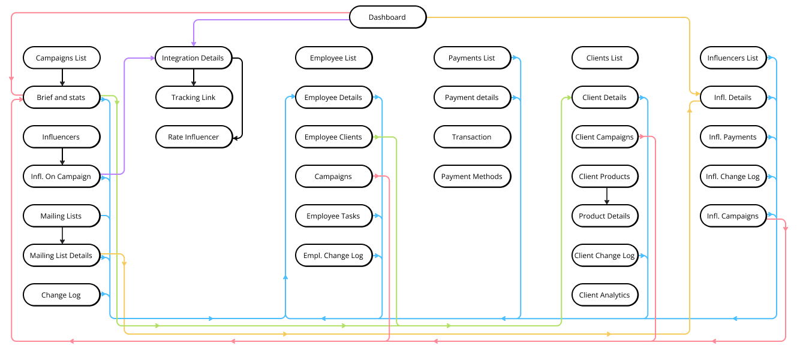
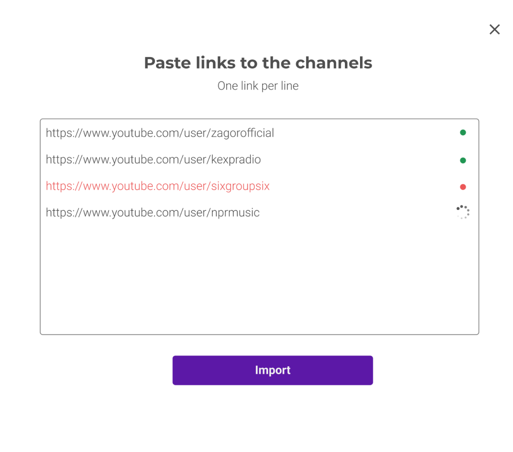
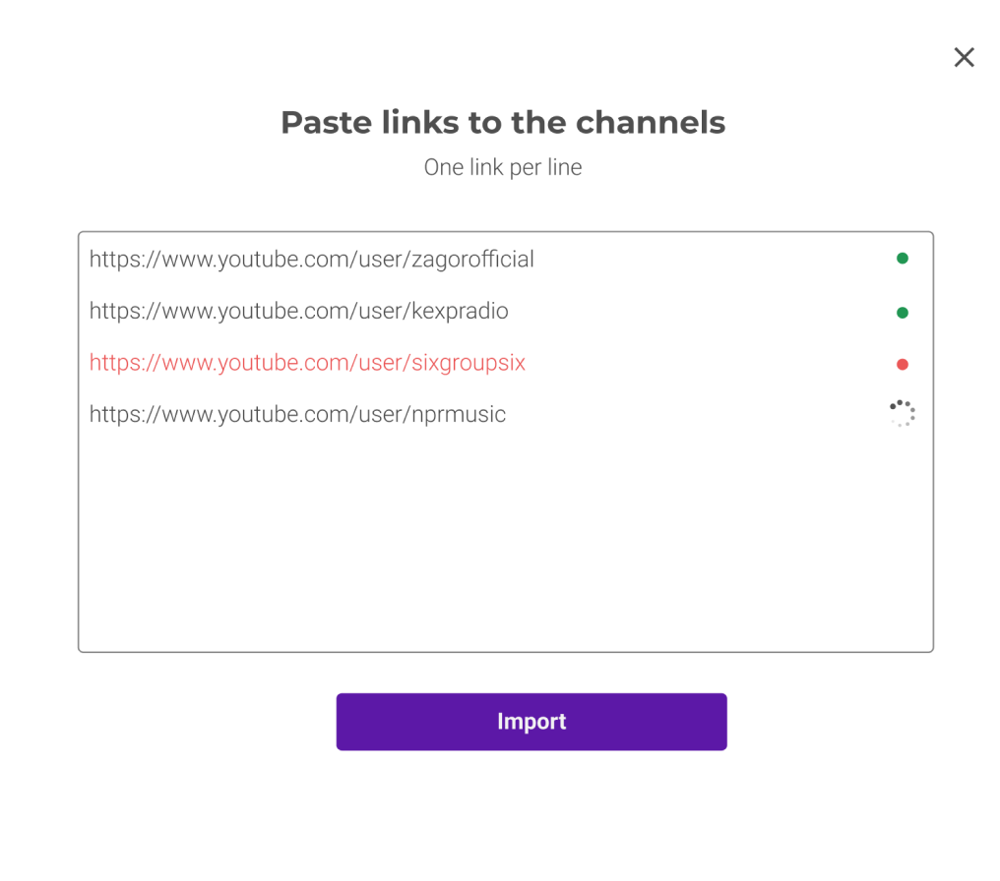
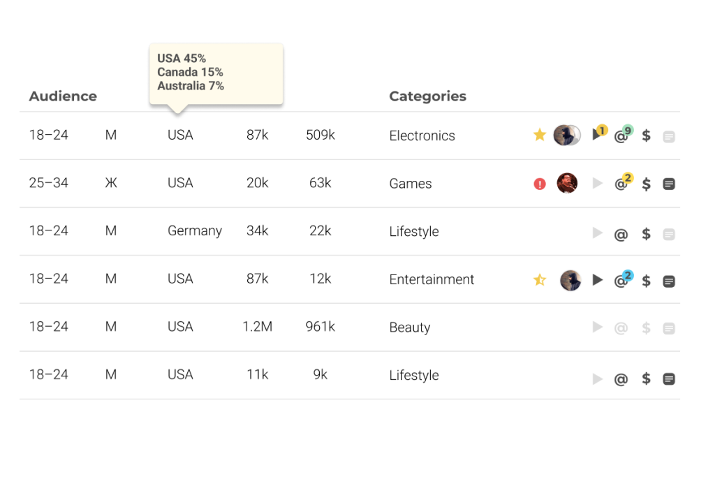
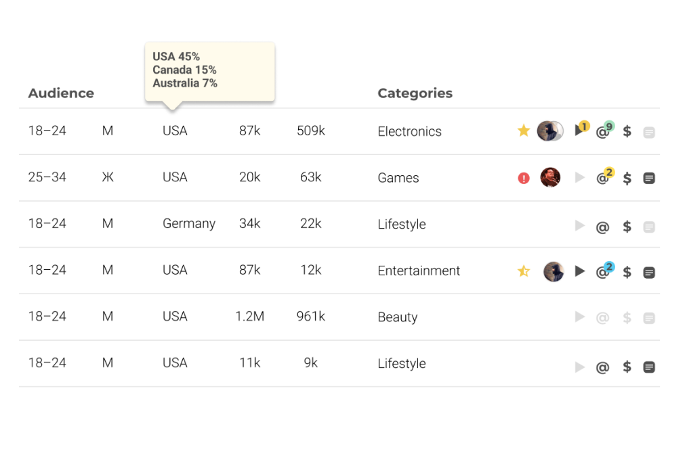

Zorka Media
A story about how I increased an influencer marketing agency's efficiency by 37% and boosted employee happiness
Zorka reached out to me to redesign their main project management tool. They wanted to make it more user friendly and improve employee productivity, and give the tool a better look and feel. It turned out to an awesome story of collaboration that lead to a full redesign of the product, and complete revision of their working process.
Project Overview
Zorka Media is a social marketing agency. It advertises their clients products and services with the help of the influencers. They work with brands like Activision Blizzard, Wargaming, Plarium, Domino’s Pizza, Hennessy, and many more.
Zorka.Video (simply called Platform) is an internal project management tool that helps company to keep the workflow organized, assist their employee on every step of their workflow, and keep the data accessible to everyone who needs it.This product was intended to sell to other agencies.
My Contribution as a contractor
- User research (survey and user interviews)
- Business process research
- Paper prototyping
- Testing and discussing prototypes with users and dev team
- Creating a design system
- Developing an information architecture
- Pixel-perfect design
- Suggestions on the workflow optimization
- Working closely with the dev team and management making sure that the design is implemented correctly and the needs are met
Process
The working process was inspired by the classical Design Thinking, but with some adjustments to the real life: time restrictions, deadlines, and company process.
1. Empathize
The working process was inspired by the classical Design Thinking, but with some adjustments to the real life: time restrictions, deadlines, and company process.
2. Define
Key challenges are defined and presented for the top management
3. Ideate
Solutions for the challenges are brainstormed and defined
4. Prototype
Each solution is drafted as a paper prototype. Sometimes I skipped this step and created a mockup
5. Test
Paper prototypes or screen mockups are tested by the users and discussed with dev team.
6. Build
The detailed design is done in Figma, using design system. Dev team implements the design.
Research
Zorka is a young company with a team open for new ideas. Employee were happy to show me what they do and share their vision of the perfect platform. First of all, I wanted to get an overview of the process and usage of the platform. To do it, I performed a survey and user interviews.
Part of the Zorka team
My initial questions
- What are the roles of the employee?
- What are the main tasks performed by the employee?
- What is the current system used for?
- What parts of the system is used by the employee more, and which aren’t used at all?
- How much time do the employee spend on the tasks they perform?
- Some specific questions on how they work on their day-to-day tasks.
Survey
I came up with an extensive Google Form with 40 questions. Besides the questions mentioned above, I added some open questions in order to have a better understanding of the process and the underlying challenges. I wanted to know about the improvements they would suggest to make in the system, how they envisions the ideal tool.
I got 18 responses that gave me the detailed understanding of the company process and day-to-day tasks. You will find some of the results bel0w. But there were still some gaps in my knowledge.
Interviews
After I processed the survey results, I scheduled 6 interviews. I wanted to dive deeper and get a clear view of the company processes. I interviewed account managers, economists, team leads, and top managers
Research Outcomes
As a result of the research, I had a clear picture of the process, user roles, and usage of the Platform.
The chart on the right side shows how Zorka executes a typical campaign for their clients. Later I used it a lot to reason my design decisions. Interestingly, even senior management were surprised by some of the details of this diagram.

Fraction of the process diagram. Click to see it all.
Challenges defined
Tool that fits the process
Old version of the Platform was designed in a way that does not fit the real process. Users had to use third party tools, spend more time navigating the system to find the information they need.
So I took the challenge to design a tool that helps users to enjoy doing their job while sticking the well-established working process.
Research showed that current version of the Platform doesn’t fully correspond to the process of the company. In particular:
~1~
User couldn’t see the connections between campaigns, mailing lists created for the campaign, bloggers who were contacted for taking part in the campaign, and payments for the bloggers. User had to search for information in different parts of the system.
~2~
There was no single place where influence manager could get an overview for all integrations, payments, tasks that he/she has to take care of.
~3~
Payments were designed as an isolated part of the system. User couldn’t access payments from campaign management or from influencer profile.
~4~
It was hard to determine if the influencer had a signed contract with Zorka. There was no single repository for contracts and invoices.
Information Architecture
First of all, I designed information architecture that corresponds the way Zorka employee did their job. Each entity connection that exists in the real world was implemented in the Platform. User can now quickly navigate from campaign details, to influencer who works on an integration within the campaign to a payment to an employee, who requested this payment to the clients this employee works with to the campaigns of this client. It saves a lot of time for the Platform users.
Information Architecture Diagram
Boost operations
The operational performance is to be improved. Together with the team we found out that blogger search function, campaign management, and some other functions could be completely redesigned and improved. It was intended to save employee time and money for the company
Platform is the product where employee spend their significant part of workday. 61% of the employee said that they spend more than 3 hours per day, another 22,2% said they spend more then 6 hours per day.
Research results
The research showed how time consuming working with the platform is and how important it is to optimize it. Google Forms
From the research, I realized that optimizing the influence managers’ routine leads not only to cutting the corporate spendings on routine tasks, but also to more employee satisfaction.
Design Solutions
Here are three examples of how we improved the performance.
 

Influence managers used to work with lists of influencers outside of the platform. Mostly they used Excel and Google Spreadsheet because it is a powerful and handy tool. Building an alternative to these industry standard tools could be challenging, so we decided to develop an extensive import-export functionality.
Now managers can operate the tools they are used to, and, on the other hand, keep campaign and blogger database up-to-date.A common use case was searching the bloggers on Youtube and then adding to the mailing lists or on the other stages of campaign. That’s why we implemented import by link to the profile.
Now user can import an influencer channel by copy and pasting link to the channel. It will instantly add the influencer to the database, pull all the necessary information from third party sources and add the influencer to the campaign. Also, they used spreadsheets for communication with their clients, so it was important to implement export feature as well.
 

New version of influencer managers list user can get a quick overview of the most important information, including audience and categories.
The area on the right shows following information
- Rating in case there was interaction with this influencer and he/she was rated by an influence manager. If there was a major problem, a corresponding indicator is shown.
- Amount of integrations posted for Zorka (link to the last one)
- Email correspondence status (see detailed description of this feature below)
- Costs per integration (shown on mouse over if Platform has this information)
- Indicator if the blogger signed a contract with Zorka

Payment details are accessible within the campaign management as well as from the payments page and blogger details pages. Now everything is interconnected within the system as it is in the real world.
Influence manager initiates the payment to the influencer after publishing an integration. Economist makes sure that the payment is done and attaches all the documents required.
Employee communicate about the status change right on the payment page. The decision making process is now transparent to everyone.

Being aware of the campaign progress is essential for the success. On this screen any team member can get a complete campaign overview.
How efficient it is in terms of impressions delivery, budget spent, stages of working with influencers on their integrations.
Also, it is easy to evaluate the performance of each manager working on the campaign.
If you happen to ask yourself about the origin of these vibrant colors, you would probably like to know that they are inspired by the colors of TV that stopped broadcasting.
Optimize communication
A significant part of time influence managers spent on typical messages to the influencer. Each time they had to type emails from scratch even though the content of these emails was the same for the most cases (like instructions). Besides, the communication wasn’t transparent for the management and other team members.
Perhaps the most significant challenge in terms of optimization, that became obvious after the research, was email communication between influencer managers and influencers.
A significant part of time influence managers were spending on typical messages to the influencer. Each time they had to type emails from scratch even though the content of these emails was the same for the most cases (like invitation to join the campaign, help instructions on posting the video, or invoice request). Some managers had their own set of templates that they copied from their Google Docs.
Numbers
77,7% of respondents said that they spend more than 34% of their time on communication with the influencers. 33% said that they spend more than 67%.
50% of the respondents said that more then a half of the messages they send is that kind 37,5% said that the amount of typical messages is 25-50%
After a calculation it turned out that on average an employee spent 26.2% of her or his time on sending typical emails
Addressing the challenge
As a way to improve the communication, I suggested integration with Intercom system. This allowed the team to use a previously created set of templates for typical communication cases. No need in typing the same texts every time, copy-pasting templates. Instead there is a centralized repository of reusable templates.
Because Influence Managers used Gmail as their main communication tool, the communication was not transparent. It was hard for another manager to pick the conversation if needed (for example, in case of sick leave).
That’s why it was important to provide maximum transparency by showing communication status on the platform (with the help of Intercom API). With its help all team members can see if the influencer was contacted, if he or she opened or replied the email.
Besides, of course all the messages are transparent within Intercom system and team lead or another manager can pick the conversation up in case of emergency.